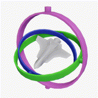

clips & nests!
clips!
My initial idea for my clips was to work them into a polyhedra construction kit. I started with a cube! Here's the Grasshopper definition (which I maintain should be called a 'chirp'):Variables such as the clip size and slot width/depth/number/position can be varied parametrically. My cardboard measured 3.5mm; I could compress it to ~1.5mm with my calipers and it would subsequently expand back to ~2.5mm. For a tight fit, I made the slot width 2mm. I made the decision to make the slot width and clip height the same so that clips could attach to one another, though this could certainly be split into two variables. With the clips I made this cube, also being used as a pen holder:
And a brief demonstration of the connection strength. Vigor evidenced by blurry motion.

Flexures are very fun and I hope to make more flexures with satisfying clips & snaps soon!
nests!
For my nesting experiments I wanted to make something that could move right off the printer bed. I settled on a gyroscope-ish object; I thought it would be fun to experiment with printing supports that would be removed through the objects motion, as with the small spindles that connect each ring. In my first test, I printed just 2 nested concentric rings with a cylinder protruding from the outer ring into a slightly larger hole in the inner ring. The result seemed reasonable, so I moved to a few rings! The grasshopper definition is below. The messy wires going down out of the image lead to some paths to automatically generate the cutting geometry & logic. This ended up distracting a bit too much given my limited Grasshopper skills, but I'd like to return to it once I'm a bit more comfortable!In my second iteration, I also moved from cylinders to cones to attach the rings. This gave the supports a bit more space to break free. The end result is fun to flick:

The rings will often move in lockstep with one another- however, I don't think this is because the axis is stuck but rather due to gimbal locking. Theoretically, in two orientations, we lose a degree of freedom. In practice, it happens for orientations around these two specific states, too. This gif from the wikipedia page on gimbal locking is illustrative:

In any case, this was a fun experiment in printing nested, moving objects!
relevant files!
| clips | 3dm | gh | stl |
|---|---|---|---|
| nests | 3dm | gh | stl |